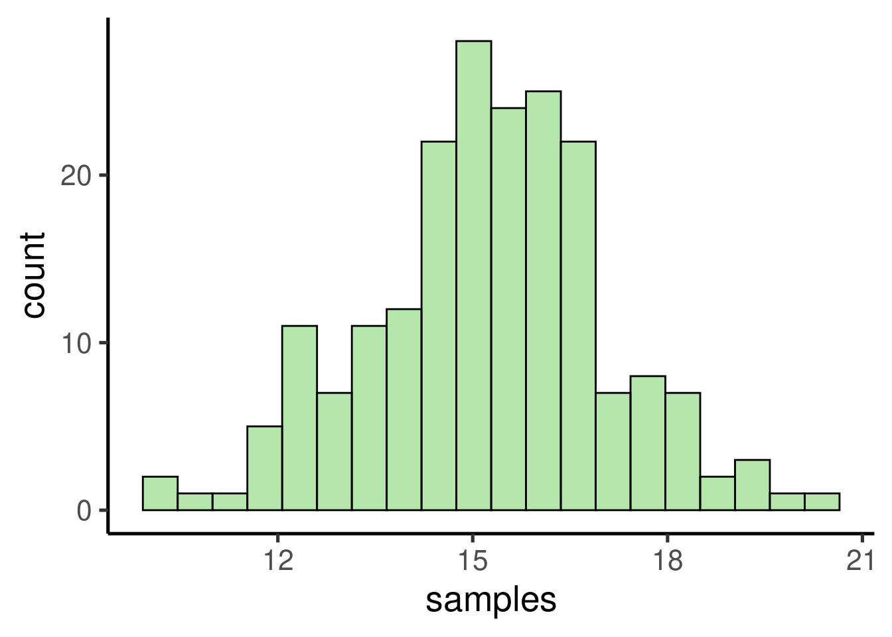

Code
library(ggplot2)
library(viridis)Get familiar with the basic random generating functions in R
Use simulated data to understand the behavior of statistical tools
Please load the following packages:
library(ggplot2)
library(viridis)Statistics allow us to infer patterns in the data. We tend to use real data sets to teach stats. However, it might get circular to understand the inner working of an statistical tool by testing its ability to infer a pattern that we are not sure its found in the data (and have no idea on the mechanism producing that pattern). Simulations allow us to create controlled scenarios in which we know for sure the patterns present in the data and the underlying processes that generated them.
R offers some basic functions for data simulation. The most used ones are the random number generating functions. The names of these functions all start with r (r____()). For instance runif():
unif_var <- runif(n = 100, min = 0, max = 10)
The output is a numeric vector of length 1 thousand (n = 100):
unif_var [1] 9.889093 3.977455 1.156978 0.697487 2.437494 7.920104 3.400624 9.720625
[9] 1.658555 4.591037 1.717481 2.314771 7.728119 0.963015 4.534478 0.847007
[17] 5.606659 0.087046 9.857371 3.165848 6.394489 2.952232 9.967037 9.060213
[25] 9.887391 0.656457 6.270388 4.904750 9.710244 3.622208 6.799935 2.637199
[33] 1.857143 1.851432 3.792967 8.470244 4.980761 7.905856 8.384639 4.569039
[41] 7.994758 3.819431 7.597012 4.367756 9.042177 3.195349 0.825691 8.162891
[49] 8.984762 9.664964 5.730689 7.200795 7.740586 6.277608 7.229893 3.868313
[57] 1.627908 1.872283 3.912495 2.739012 1.919177 5.043918 7.638404 6.936689
[65] 5.440542 6.590872 4.687284 4.818055 3.370636 4.245263 2.870151 6.011915
[73] 8.407423 6.208370 1.345516 5.677224 4.434263 4.379754 6.236172 9.326533
[81] 8.884926 8.785406 2.421769 7.414538 3.876563 0.789517 0.948356 7.621427
[89] 3.478940 4.167667 3.440162 0.084109 9.115750 1.822054 7.228034 5.719633
[97] 5.400364 3.549474 8.240918 1.861368We can explore the output by plotting a histogram:
# create histogram
ggplot(data = data.frame(unif_var), mapping = aes(x = unif_var)) +
geom_histogram()
It shows a uniform distribution ranging from 0 to 10.
We can also simulate random numbers coming from a normal distribution using rnorm():
# create random variable
norm_var <- rnorm(n = 1000, mean = 2, sd = 1)
# plot histogram
ggplot(data = data.frame(norm_var), mapping = aes(x = norm_var)) +
geom_histogram()
Note that random number generating functions all have the argument ‘n’, which sets the length of the output vector (i.e. number of random numbers), plus some additional arguments related to specific parameters of the distribution.
Continuous variables (i.e. numeric vectors) can be converted to discrete variables (i.e. integer numbers) simply by rounding them:
v1 <- rnorm(n = 5, mean = 10, sd = 3)
v1[1] 15.4269 8.5450 15.1387 8.9203 9.3693round(x = v1, digits = 0)[1] 15 9 15 9 9
Exercise
What do the functions rbinom() and rexp() do? (tip: run ?rexp)
Run them and make histograms of their output
What do the arguments ‘mean’ and ‘sd’ in rnorm() do? Play with different values and check the histogram to get a sense of their effect in the simulation
The easiest way to generate categorical variables is to use the ‘letters’ (or ‘LETTERS’) example vector to assign category levels. We can do this using the function rep(). For instance, the following code creates a categorical (character) vector with two levels, each one with 4 observations:
rep(x = letters[1:2], each = 4)[1] "a" "a" "a" "a" "b" "b" "b" "b"
We can also replicate this pattern using the argument ‘times’. This code replicates the previous vector 2 times:
rep(x = letters[1:2], each = 4, times = 2) [1] "a" "a" "a" "a" "b" "b" "b" "b" "a" "a" "a" "a" "b" "b" "b" "b"
Another option is to simulate a variable from a binomial distribution and then convert it into a factor:
# run rbinom
binom_var <- rbinom(n = 50, size = 1, prob = 0.5)
binom_var [1] 1 0 0 1 1 0 0 0 0 0 0 0 1 1 1 0 0 1 0 1 0 0 0 0 0 0 0 1 0 1 1 1 0 0 0 1 0 0
[39] 1 1 0 0 0 0 0 1 0 1 1 1categ_var <- factor(binom_var, labels = c("a",
"b"))
categ_var [1] b a a b b a a a a a a a b b b a a b a b a a a a a a a b a b b b a a a b a a
[39] b b a a a a a b a b b b
Levels: a b
The other important R tool for playing with simulated data is sample(). This function allows you to take samples of specific sizes from vectors. For instance, take the example vector letters:
letters [1] "a" "b" "c" "d" "e" "f" "g" "h" "i" "j" "k" "l" "m" "n" "o" "p" "q" "r" "s"
[20] "t" "u" "v" "w" "x" "y" "z"
We can take a sample of this vector like is:
sample(x = letters, size = 10) [1] "i" "r" "q" "a" "c" "m" "y" "z" "u" "v"
The argument ‘size’ allow us to determine the size of the sample. Note that we get an error if the size is larger than the vector itself:
sample(x = letters, size = 30)Error in sample.int(length(x), size, replace, prob): cannot take a sample larger than the population when 'replace = FALSE'
This can only be done when sampling with replacement. Sampling with replacement can be applied by setting the argument replace = TRUE:
sample(x = letters, size = 30, replace = TRUE) [1] "j" "i" "h" "i" "k" "u" "n" "i" "w" "k" "c" "t" "m" "p" "i" "h" "d" "w" "c"
[20] "q" "j" "e" "e" "j" "k" "c" "l" "t" "r" "h"
Often simulations most be repeated several times to rule out spurious results due to chance or just to try different parameters. The functions for simulating data mentioned above can be run several times (e.g. iterated) using the function replicate():
repl_rnorm <- replicate(n = 3, expr = rnorm(2),
simplify = FALSE)
class(repl_rnorm)[1] "list"repl_rnorm[[1]]
[1] 1.19184 -0.33992
[[2]]
[1] 0.78911 -0.63213
[[3]]
[1] -1.49312 -0.13441
The last trick we need to run simulations in R is the ability to reproduce a simulation (i.e. get the exact same simulated data and results). This can be useful for allowing other researchers to run our analyses in the exact same way. This can be easily done with the function set.seed(). Try running the following code. You should get the same output:
set.seed(10)
runif(n = 2)[1] 0.50748 0.30677Now that we know how to simulate continuous and categorical variable. We can put them together to create simulated data sets. This can be done using the function data.frame():
# create categorical variable
group <- rep(x = letters[1:2], each = 3)
# create continous data
size <- rnorm(n = 6, mean = 5, sd = 1)
# put them together in a data frame
df <- data.frame(group, size)
# print
df| group | size |
|---|---|
| a | 4.8157 |
| a | 3.6287 |
| a | 4.4008 |
| b | 5.2945 |
| b | 5.3898 |
| b | 3.7919 |
Of course, we could add more variables to this data frame:
# create categorical variable
group <- rep(x = letters[1:2], each = 3)
individual <- LETTERS[1:6]
# create continous data
size <- rnorm(n = 6, mean = 5, sd = 1)
weight <- rnorm(n = 6, mean = 100, sd = 10)
# put them together in a data frame
df <- data.frame(group, individual, size,
weight)
# print
df| group | individual | size | weight |
|---|---|---|---|
| a | A | 4.6363 | 109.874 |
| a | B | 3.3733 | 107.414 |
| a | C | 4.7435 | 100.894 |
| b | D | 6.1018 | 90.451 |
| b | E | 5.7558 | 98.049 |
| b | F | 4.7618 | 109.255 |
And that’s a simulated data set in its most basic form. That looks a lot like the kind of data we use to work with in the biological science.
The Central Limit Theorem states that, if we take repeated random samples of a population:
The theorem is a key concept for inferential statistics as it implies that statistical methods that work for normal distributions can be applicable to many problems involving other types of distributions. Nonetheless, the point here is only to showcase how simulations can be used to understand the behavior statistical methods.
To check if those basic claims about the Central Limit Theorem hold true we can use simulated data in R. Let’s simulate a 1000 observation population with a uniform distribution:
# simulate uniform population
unif_pop <- runif(n = 1000, min = 0, max = 10)
# check distribution/ plot histogram
ggplot(data = data.frame(unif_pop), mapping = aes(x = unif_pop)) +
geom_histogram()
We can take random samples using sample() like this:
sample(x = unif_pop, size = 30) [1] 9.28420 1.02626 2.57517 3.32485 6.89990 2.29404 0.33737 8.21366 3.30364
[10] 8.03793 2.59174 7.81770 5.65426 0.63831 2.83470 4.20434 4.76330 4.42193
[19] 6.97830 7.92625 0.68121 3.52323 6.51103 5.38289 7.97210 1.80062 4.21282
[28] 3.33866 8.91223 4.71163
This process can be replicated several times with replicate():
samples <- replicate(n = 100, expr = mean(sample(x = unif_pop,
size = 30)))
The code above takes 100 samples with 30 values each. We can now check the distribution of the samples:
# check distribution/ plot histogram
ggplot(data = data.frame(samples), mapping = aes(x = samples)) +
geom_histogram()
… as well as the mean:
mean(samples)[1] 5.0212
As expected, the samples follows a normal distribution with a mean close to the mean of the population, which is:
mean(unif_pop)[1] 5.0527
Let’s try with a more complex distribution. For instance, a bimodal distribution:
# set seed
set.seed(123)
# simulate variables
norm1 <- rnorm(n = 1000, mean = 10, sd = 3)
norm2 <- rnorm(n = 1000, mean = 20, sd = 3)
# add them in a single one
bimod_pop <- c(norm1, norm2)
# check distribution/ plot histogram
ggplot(data = data.frame(bimod_pop), mapping = aes(x = bimod_pop)) +
geom_histogram()
samples <- replicate(200, mean(sample(bimod_pop,
10)))
# check distribution/ plot histogram
ggplot(data = data.frame(samples), mapping = aes(x = samples)) +
geom_histogram()
mean(samples)[1] 15.231mean(bimod_pop)[1] 15.088
Exercise
Try exploring the Central Limit Theorem as above but this time using:
rexp())rbinom())
R version 4.3.2 (2023-10-31)
Platform: x86_64-pc-linux-gnu (64-bit)
Running under: Ubuntu 22.04.2 LTS
Matrix products: default
BLAS: /usr/lib/x86_64-linux-gnu/blas/libblas.so.3.10.0
LAPACK: /usr/lib/x86_64-linux-gnu/lapack/liblapack.so.3.10.0
locale:
[1] LC_CTYPE=en_US.UTF-8 LC_NUMERIC=C
[3] LC_TIME=en_US.UTF-8 LC_COLLATE=en_US.UTF-8
[5] LC_MONETARY=en_US.UTF-8 LC_MESSAGES=en_US.UTF-8
[7] LC_PAPER=en_US.UTF-8 LC_NAME=C
[9] LC_ADDRESS=C LC_TELEPHONE=C
[11] LC_MEASUREMENT=en_US.UTF-8 LC_IDENTIFICATION=C
time zone: America/Costa_Rica
tzcode source: system (glibc)
attached base packages:
[1] stats graphics grDevices utils datasets methods base
other attached packages:
[1] viridis_0.6.5 viridisLite_0.4.2 ggplot2_3.5.1 knitr_1.48
[5] kableExtra_1.4.0
loaded via a namespace (and not attached):
[1] gtable_0.3.5 jsonlite_1.8.8 highr_0.11 dplyr_1.1.4
[5] compiler_4.3.2 tidyselect_1.2.1 xml2_1.3.6 stringr_1.5.1
[9] gridExtra_2.3 systemfonts_1.1.0 scales_1.3.0 yaml_2.3.10
[13] fastmap_1.2.0 R6_2.5.1 labeling_0.4.3 generics_0.1.3
[17] htmlwidgets_1.6.4 tibble_3.2.1 munsell_0.5.1 svglite_2.1.3
[21] pillar_1.9.0 rlang_1.1.4 utf8_1.2.4 stringi_1.8.4
[25] xfun_0.47 cli_3.6.3 withr_3.0.1 magrittr_2.0.3
[29] formatR_1.14 digest_0.6.37 grid_4.3.2 rstudioapi_0.16.0
[33] lifecycle_1.0.4 vctrs_0.6.5 evaluate_0.24.0 glue_1.7.0
[37] farver_2.1.2 fansi_1.0.6 colorspace_2.1-1 rmarkdown_2.28
[41] tools_4.3.2 pkgconfig_2.0.3 htmltools_0.5.8.1